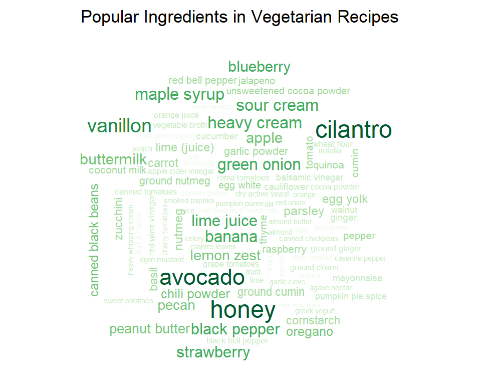
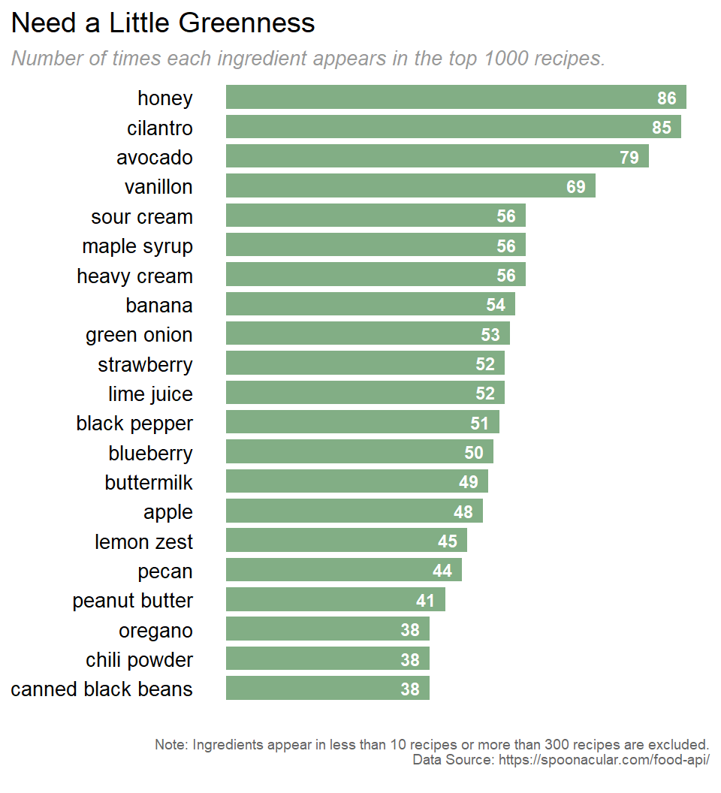

What does a vegetarian diet consist of? What are the most popular elements in vegetarian diet? To find out what a vegetarian’s diet is like, we collect the top 1000 popular vegetarian recipes using the Spoonacular API and create a wordcloud with the most popular ingredients.
library(wordcloud)
load("data\\ingredientDfCleaned.RData")
wordcloudDf <- ingredientDfCleaned %>%
filter(cnt > 10 & cnt < 100)
set.seed(1997)
layout(matrix(c(1, 2), nrow = 2), heights = c(1, 10))
par(mar=rep(0, 4))
plot.new()
text(x = 0.5, y = 0.5, cex = 1.1, labels = "Popular Ingredients in Vegetarian Recipes")
wordcloud(wordcloudDf$ingredient, wordcloudDf$cnt, scale = c(1.5,.25), min.freq = 0,
max.words = 100,
colors = brewer.pal(max(7, ncol(wordcloudDf$cnt)),"Greens"))
The wordcloud provides a quick visual overview of the popular ingredients, from which we can see that cilantro, avocado, and honey are pretty popular in vegetarian recipes, some fruits like strawberry, banana, and blueberry are also well-received.
To give a more detailed comparison, we then use a bar chart to show the number of recipes contain each ingredient.
library(ggplot2)
library(ggthemes)
top20Ingredient <- ingredientDfCleaned %>%
filter(cnt > 10 & cnt < 100) %>%
top_n(n = 20, wt = cnt) %>%
mutate(ingredient = fct_reorder(ingredient, cnt))
ggplot(top20Ingredient) +
geom_bar(aes(x = ingredient, y = cnt),
stat = "identity", position = "identity",
fill = "#639a67", alpha = 0.8, width = 0.8) +
geom_text(aes(x = ingredient, y = cnt, label = cnt),
color = "white", fontface = "bold", size = 3, hjust = 1.5) +
coord_flip() +
labs(
title = "Need a Little Greenness",
subtitle = "Number of times each ingredient appears in the top 1000 recipes.",
caption = "
Note: Ingredients appear in less than 10 recipes or more than 300 recipes are excluded.
Data Source: https://spoonacular.com/food-api/
"
) +
theme_hc() +
theme(
panel.grid.major.y = element_blank(),
axis.ticks = element_blank(),
axis.text.x = element_blank(),
axis.text.y = element_text(color = "black", size = 10),
axis.title.x = element_blank(),
axis.title.y = element_blank(),
legend.position = "none",
plot.caption = element_text(size=7, color="grey40"),
plot.subtitle = element_text(size=10, color="grey60", face="italic"),
plot.title.position = "plot"
)
The bar plot shows that honey, cilantro, and avocado appear in about 80 recipes among the top 1000 recipes, which is about 8%. Given they are not ingredients like suger or salt, this populariy is pretty stunning.
Hope you enjoyed the visualization. For the clarity and efficiency of the presentation, I exclude the code for data preprocessing above. Check the code below for more about the data acquisition and wrangling part of these two visualization. Thank you!
combined <- data.frame(recipe_id = integer(),
recipe_name = character())
for (n in seq(0,900,100)) {
request <- httr::GET(
"https://api.spoonacular.com/recipes/complexSearch",
query = list(apiKey = Sys.getenv("spoonacular_api_key"),
diet = "vegetarian",
number = 100,
offset = n, # Spoonacular API only allows this to range from 0 to 900
sort = "popularity",
sortDirection = "desc"
)
)
response <- jsonlite::fromJSON(httr::content(request, as = "text", encoding = "UTF-8"), flatten = TRUE)[[1]] %>%
dplyr::select(recipe_id = id, recipe_name = title)
combined <- rbind(combined, response)
print(paste("extracted", n + 100, "recipes"))
}
save(combined, file = "combined_recipe_id.RData")combined <- combined %>%
mutate(ingredient = NA)
for (i in 1:nrow(combined)) {
recipe_id <- combined[i, "recipe_id"]
request <- httr::GET(
paste0("https://api.spoonacular.com/recipes/",recipe_id,"/ingredientWidget.json"),
query = list(apiKey = Sys.getenv("spoonacular_api_key")))
response <- jsonlite::fromJSON(httr::content(request, as = "text", encoding = "UTF-8"), flatten = TRUE)[[1]]
ingredient <- response[["name"]]
combined[i, "ingredient"] <- paste(ingredient, collapse = "//")
}
save(combined, file = "combined_recipe_id_ingredient.RData")library(stringr)
library(SemNetCleaner)
load("combined_recipe_id_ingredient.RData")
allIngredient <- paste(combined$ingredient, collapse = "//")
ingredientList <- strsplit(allIngredient, "//")
ingredientDf <- data.frame(ingredientList, stringsAsFactors = FALSE)
names(ingredientDf) <- "ingredient"
ingredientDf <- ingredientDf %>%
mutate(ingredient = case_when(ingredient %in% c("bread flour", "all purpose flour","gluten-free gluten free all purpose baking flour","whole wheat white flour","canned all purpose flour","plain flour","AP flour","plain all purpose flour","gluten free flour","gluten-free flour","unbleached flour","unbleached all purpose flour","white bread flour") ~ "flour",
ingredient %in% c("whole wheat flour","white whole wheat flour","white whole wheat pastry flour","whole-wheat pastry flour") ~ "whole wheat flour",
ingredient == "ground cinnamon" ~ "cinnamon",
ingredient == "baking powder" ~ "baking soda",
ingredient == "garlic cloves" ~ "garlic",
ingredient %in% c("fresh lemon juice", "lemon (juice)") ~ "lemon juice",
ingredient == "egg yolks" ~ "egg yolk",
ingredient == "egg whites" ~ "egg white",
ingredient %in% c("unsalted butter", "salted butter", "unsalted salted butter") ~ "butter",
ingredient == "half n half cream" ~ "half & half cream",
ingredient %in% c("red onion", "vidalia onion", "yellow onion", "white onion", "sweet onion", "red white yellow onion", "red diced onion", "white yellow onion", "yellow onions", "red onions", "sweet onions", "onions") ~ "onion",
ingredient %in% c("green onions", "spring onions", "scallions", "green white scallions", "scallion", "green white light scallions") ~ "green onion",
ingredient == "apples" ~ "apple",
ingredient == "basil leaves" ~ "basil",
ingredient == "bay leaves" ~ "bay leaf",
ingredient %in% c("barbecue sauce", "Barbeque Dipping Sauce") ~ "bbq sauce",
TRUE ~ ingredient))
ingredientDf[str_detect(ingredientDf$ingredient, "\\b(apple|apples)$"),] <- "apple" # because the singularize() function has trouble dealing with "apples", so we have to move this one up to here
ingredientDf <- ingredientDf %>%
mutate(ingredient = str_replace(ingredient, "^(dried |diced |fresh |frozen |whole )+(.*)$", "\\2")) # remove leading dried, diced ...
ingredientDf$ingredient <- unlist(map(ingredientDf$ingredient, singularize)) # plural to single, takes a few minutes to run
# combine some too detailed ingredient
ingredientDf[str_detect(ingredientDf$ingredient, "sugar"),] <- "sugar"
ingredientDf[str_detect(ingredientDf$ingredient, "\\bsalt\\b"),] <- "salt"
ingredientDf[str_detect(ingredientDf$ingredient, "flour tortillas"),] <- "flour tortillas"
ingredientDf[str_detect(ingredientDf$ingredient, "coconut milk"),] <- "coconut milk"
ingredientDf[str_detect(ingredientDf$ingredient, "peanut butter"),] <- "peanut butter"
ingredientDf[str_detect(ingredientDf$ingredient, "oil$"),] <- "oil"
ingredientDf[str_detect(ingredientDf$ingredient, "cheese$"),] <- "cheese"
ingredientDf[str_detect(ingredientDf$ingredient, "sour cream$"),] <- "sour cream"
ingredientDfCleaned <- ingredientDf %>%
group_by(ingredient) %>%
summarise(cnt = n()) %>%
ungroup() %>%
arrange(desc(cnt))
save(ingredientDfCleaned, file = "ingredientDfCleaned.RData") Data Visualization (QMSS Spring 2020) Group F: Vegan
Source files can be found here.
Please do not hesitate to give us your feedback ❤